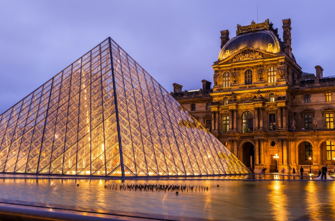
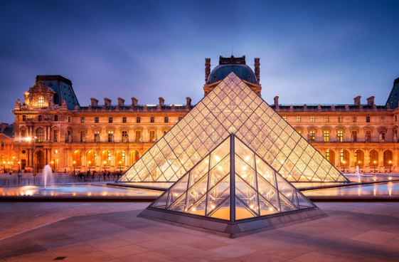
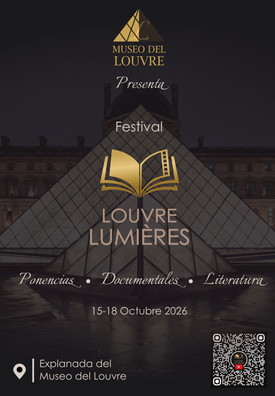
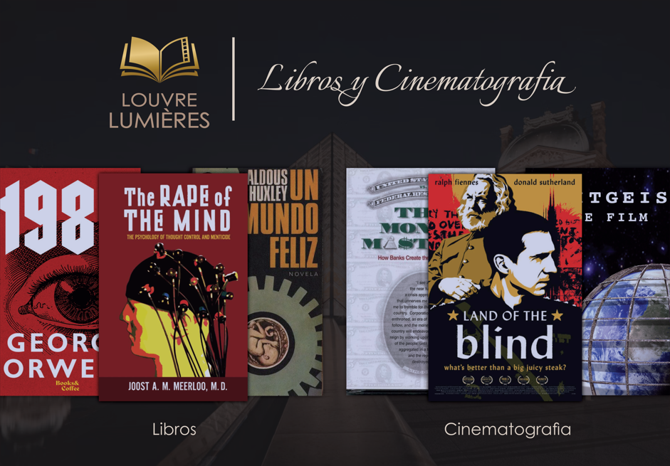

Museo del Louvre
El Museo del Louvre es uno de los espacios culturales más reconocidos y visitados del mundo, símbolo de la historia, el arte y la identidad de Francia, ubicado a orillas del río Sena, en el corazón de París, el Louvre ocupa el antiguo Palacio del Louvre, una construcción que inició en el siglo XIII como fortaleza ordenada por el rey Felipe Augusto para proteger la ciudad. A lo largo de los siglos, el edificio fue transformándose en residencia real, palacio renacentista y finalmente en un museo público que abrió sus puertas en 1793, tras la Revolución Francesa, desde entonces, el Louvre ha evolucionado hasta convertirse en un epicentro del arte universal, albergando más de 500 000 piezas que representan distintas épocas y civilizaciones: antigüedades egipcias, griegas, romanas y orientales; obras maestras del Renacimiento; pinturas y esculturas europeas, y colecciones dedicadas a las artes del Islam, entre muchas otras. Entre sus piezas más emblemáticas destacan la Mona Lisa de Leonardo da Vinci, la Venus de Milo, la Victoria de Samotracia y el Código de Hammurabi, entre innumerables tesoros de la humanidad.
Además de su invaluable colección, el museo es un referente arquitectónico, su estructura combina la majestuosidad del palacio clásico francés con la modernidad de la Pirámide de Cristal, diseñada por el arquitecto Ieoh Ming Pei e inaugurada en 1989, que hoy se ha convertido en un ícono contemporáneo de París, este contraste entre lo histórico y lo moderno refleja el espíritu del Louvre: un lugar donde el arte dialoga con el tiempo, conectando pasado, presente y futuro. Más que un simple museo, el Louvre es un centro vivo de conocimiento y creación, dedicado a la preservación, investigación y difusión del patrimonio artístico, cada año recibe millones de visitantes de todo el mundo, quienes encuentran en sus salas una experiencia que trasciende la contemplación estética para convertirse en un viaje por la historia de la humanidad. Visitar el Louvre es adentrarse en un universo de belleza, sabiduría e inspiración; es descubrir cómo el arte ha sido siempre un reflejo del pensamiento, la emoción y la cultura de los pueblos.


Museo de Louvre
Haga click aqui para vista 360
Iconos de diversos exploradores / navegadores web usados para visualizar páginas web / documentos HTML.
Icono del editor de Texto Sublime Text.
Festival
En Festival Louvre Lumières, los asistentes podrán disfrutar de charlas con invitados especiales, conocer obras literarias que abren la mente, ver documentales y películas muy interesantes en un ambiente único bajo la pirámide.

Ponentes
El festival reúne a destacados autores y pensadores internacionales: Jorge Guerra, quien presentará Nobleza Negra y Poderes Ocultos, un análisis sobre la influencia histórica de las élites y las estructuras de poder; Antony Cyril Sutton, reconocido por su Trilogía de Wall Street, donde revela el papel del poder financiero en grandes acontecimientos del siglo XX; Marcelo Gullo, que expondrá su concepto de La Insubordinación Fundante, una teoría sobre la soberanía y el desarrollo de las naciones; y Juan Miguel Zunzunegui, quien compartirá Locura y Razón, una reflexión sobre la línea entre cordura, narrativa y percepción social, entre otros. Estos ponentes ofrecen una visión profunda y crítica sobre la historia, el pensamiento y las fuerzas que moldean nuestra realidad.

Da clic sobre la imagen para conocer mas sobre los ponentes
Libros y Cinematografia
El festival presenta una selección de obras fundamentales para comprender la relación entre poder, sociedad y control: 1984 de George Orwell, una novela distópica que revela cómo la vigilancia total y la manipulación del lenguaje pueden someter a una sociedad entera; Un Mundo Feliz de Aldous Huxley, que plantea un futuro donde el condicionamiento psicológico y el placer superficial reemplazan la libertad auténtica; The Rape of the Mind de Joost Meerloo, un análisis profundo sobre las técnicas de coerción mental y los mecanismos de manipulación psicológica utilizados por regímenes totalitarios; Confesiones de un Sicario Económico de John Perkins, un testimonio que expone cómo ciertos organismos financieros internacionales influyen en países enteros mediante deudas, presiones políticas y estrategias encubiertas; Propaganda de Edward Bernays.
El festival también incorpora obras audiovisuales que invitan a cuestionar las estructuras de poder contemporáneas: el documental Zeitgeist, que examina temas como la manipulación social, los sistemas económicos y las narrativas institucionales que influyen en la percepción colectiva; The Money Masters / Los Amos del Dinero (1996), un análisis histórico sobre el origen y funcionamiento de los bancos centrales, la creación del dinero y el impacto del sistema financiero en la política global; y Land of the Blind (2006), una película que aborda, mediante una metáfora política, cómo los regímenes autoritarios pueden nacer tanto del abuso del poder como del fanatismo revolucionario. Estas producciones ofrecen miradas críticas que complementan los ejes temáticos del festival sobre libertad, conciencia y control social.

Da clic sobre la imagen para conocer mas